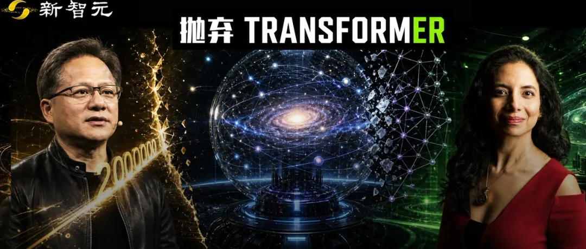

新智元报道
新智元报道

太震撼了！
AI开始预测全宇宙——
LLM预测世界的语言描述，视频世界模型预测（动态）图像，而这次直接预测四维的空间与时间的物理状态。
最令人震撼的是，它采用了全新架构「神经算子」，而非如日中天的Transformer。
在单次推理中直接输出完整的四维轨迹，连时间维度一起算进去。
这需要的长下文长度无疑非常大，而现在初创企业Accelerated Understanding在训练中上下文以提升到万亿（1T）级别，推理时超过5万亿！
5万亿是什么概念？这是当前顶尖LLM的500万倍！相当于你让AI一口气读完500万次《战争与和平》，而且它全记住了。
你品，你细品。
时间不是根本性的东西，它更像是更深层信息结构衍生出来的表象，是不是有点意思？如果把这个思路推到极致，那就等于在生成整个物理宇宙。
更让人吃惊的是，这家初创的两位创始人，刚刚拒绝了原世界首富Jeff Bezos带着35%股权、200万美金年薪以及超20亿美元融资承诺的重金招揽。
而站在他们背后的「精神股东」和可能的隐秘推手，或许正是那个穿着皮衣的男人——英伟达CEO黄仁勋。

昨天，硅谷投资大佬含糊其辞，但全网沸腾，纷纷推测Ilya的SSI这次可能要放大招了。
而现在谜底似乎揭开，并不是Ilya，甚至不是语言模型，而是一台真正的「宇宙生成器」。
Accelerated Understanding的这组恐怖数据被疯传：
模型参数规模：已完成高达1万亿（1 Trillion）参数的模型预训练。 极致扩展性：扩展实验规模已经一路飙升到了35万亿（35 Trillion）参数。 训练期上下文：1 Trillion（1万亿）。 推理期上下文：超过5Trillion（5万亿）。
在如此庞大的上下文支撑下，这个模型展现出了令人恐惧的能力：
它在进行物理推演时，不需要子采样（No sub-sampling），不需要分块处理（No chunking）。
面对极其复杂的4D空间物理系统，它能够「一次推演（One-shot）」生成整个时空的完整运动轨迹！
不仅如此，由于底层逻辑的统一，同一个模型，竟然可以同时处理完全不同领域的物理问题！
这在以前，不可想象。
过去，气象学家用气象模型，材料学家用材料模型；而现在，Accelerated Understanding告诉世界：物理法则在底层是相通的，一个通用物理大模型，足以包打天下。
Accelerated Understanding最具颠覆性的核心功能，在于它构建了一个「模拟 → 改进 → 模拟」的完美闭环。它不仅是一个「生成器」，更是一个真正的「现实验证器」（Reality Validator）。
而且这次的定向反馈，也戳中了Ilya的测试时训练。
如果你今天去问任何一个AI从业者：「当前最火的AI架构是什么？」答案100%是：Transformer。
从ChatGPT到各大视频生成模型，这个由谷歌发明的架构统治了过去几年的AI界（就是ChatGPT里那个「T」）。
但在Anima看来，Transformer的路线，走偏了。
「以语言为中心的智能观点，是『以人类为中心』的，」Anima在发布会前的独家采访中一针见血地指出，「而将物理学置于中心，才是『以自然为中心』的观点。」
现在的LLM和视频世界模型是怎么工作的？它们本质上是在玩「概率游戏」。
ChatGPT是在预测下一个最可能出现的词。
而那些惊艳的视频生成AI，本质上是在走视觉捷径（Visual Shortcuts）——它们只是让生成的画面「看起来」符合物理规律，但如果你深究里面的重力、流体力学、材质张力，就会发现它们全是错的。
它们根本不懂物理，它们只是高阶的「像素复读机」。
而文本只有1个维度，视频只有三个维度，而现实的时空是3维的空间+1维时间。
此外，许多模型采用自回归方式——逐帧预测，误差逐级累积。
所以，Accelerated Understanding彻底拒绝了Transformer，也拒绝了视觉捷径。
他们祭出的终极杀器，是Anima多年前就参与开创的一项革命性技术——神经算子（Neural Operators）。
与处理文本不同，神经算子是专门为处理复杂的、不可见的物理数据而生的。它不需要把物理世界强行降维成文字或像素，而是直接在完整的4D维度（3D空间+时间维度）中理解多物理现象。
不可见的气流、核聚变反应堆里的等离子体湍流、芯片内部的微观热力学分布……这些人类肉眼看不见、传统AI无法用「视觉经验」去猜的物理过程，在这个全新的架构下，变得清晰可见且可计算。
看到这里，你可能会问，训练这么恐怖的模型，需要多大的算力？钱从哪来？
虽然拒绝透露目前的融资细节，联合创始人只是含蓄地表示「已经与计算提供商达成了合作，他们提供了硬件集群来开发和运行AI」。
但所有的线索，都指向了她曾经的老东家——英伟达，以及那个喊着「AI即未来」的黄仁勋（Jensen Huang）。
时间倒回2018年，Anima被英伟达聘为AI研究总监。
五年间，她带领着一支顶尖科学家团队，探索如何将英伟达的GPU算力应用于前沿AI领域。
当时，团队做出了一个早期的惊艳项目：用AI加速天气预测。结果显示，AI预测的准确率竟然与气象学家使用极其复杂的传统计算流体力学模型一样高，但速度快了几个数量级。
这个结果直接「震碎」了黄仁勋。
2021年的英伟达GTC大会上，黄仁勋亲自登台，向全世界展示了Anima团队关于「神经算子」的研究成果。「他当时太兴奋了，」Jensen Huang回忆道。
当Anima半开玩笑地对老黄说：「AI可能会抢走那些理论物理学家的午餐」。
当时，黄仁勋眼光大放，霸气地回答：「我想要它吃掉他们所有的午餐！」
据Anima透露，正是黄仁勋最初鼓励她去追求并实现这个「物理AI」的疯狂想法。
虽然英伟达官方今天尚未回复路透社关于是否投资了该公司的询问，但在AI圈，大家心知肚明——没有顶级算力的暗中支持，绝不可能炼出5万亿上下文的庞然大物。
老黄的这盘大棋，终于落子了。
不过，要理解这个「物理大模型」有多牛，我们得先回到2024年底的洛杉矶。
在一家高档餐厅里，一场足以改变当今AI格局的秘密晚宴正在进行。
晚宴的主角之一，是投资人兼生物科技企业家Vik Bajaj（他后来与贝索斯共同创立了估值破百亿的Project Prometheus）。
而坐在他对面的，是一对拥有着顶级AI背景的夫妻档：加州理工学院计算与数学科学教授、前英伟达AI研究总监Anima Anandkumar，以及她的丈夫、顶尖AI基础设施工程师Benedikt Jenik。
Bajaj带着一份名为「普罗米修斯计划」（Project Prometheus）的Offer有备而来。这份由贝索斯在背后大力支持的协议，条件丰厚到令人咋舌：
邀请Anima担任公司的代言人、董事会成员及科学愿景的主导者；
夫妻二人将获得高达35%的公司股权；
基础年薪100万美元，入职三个月后直接翻倍至200万美元；
最夸张的是，协议里白纸黑字写着，包括贝索斯在内的投资者将为B轮之前的融资提供超过20亿美元的「承诺资金」。
在如今这个大模型融资越来越困难、算力成本高昂的时代，这是一张通往财富自由和行业权力的超级金门票。
然而，Anima和Jenik选择了拒绝。
为什么？因为他们手里捏着的东西，其潜力远超一家「自动化制造复杂物理系统」的公司。他们不想寄人篱下，更不想自己的技术愿景被资本裹挟。他们要做的，是构建一个能直接理解并模拟物理宇宙的「神级模型」。
最终，Anima夫妻俩，则默默蛰伏，直到今天，带着他们独立打造的Accelerated Understanding震惊世界。
2026年8月25日，这注定是被载入AI发展史册的一天。
当我们在为大语言模型能写出一首好诗、能帮我们润色工作邮件而欢呼时，Accelerated Understanding像一个从未来穿越回来的破壁人，冷酷地告诉我们：语言和图像只是人类理解世界的表象，物理法则，才是这个宇宙真正的底层代码。
拒绝贝索斯，拒绝Transformer，抛弃视觉捷径，直击4D时空的本质。Anima Anandkumar和Benedikt Jenik用1万亿参数和5万亿上下文的疯狂数据，向世界宣告了「物理AI（Physical AI）」时代的到来。
参考资料：
编辑：大卫